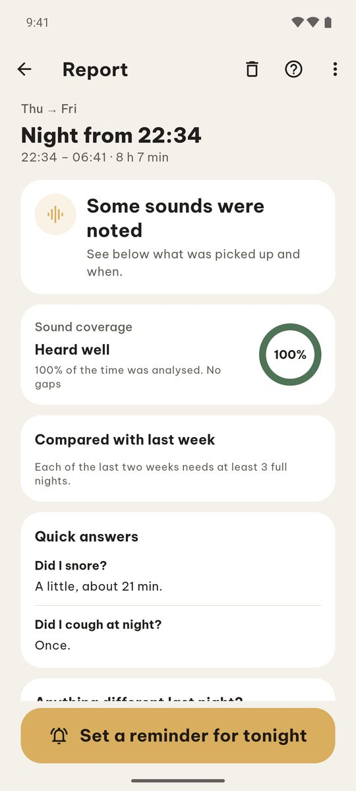
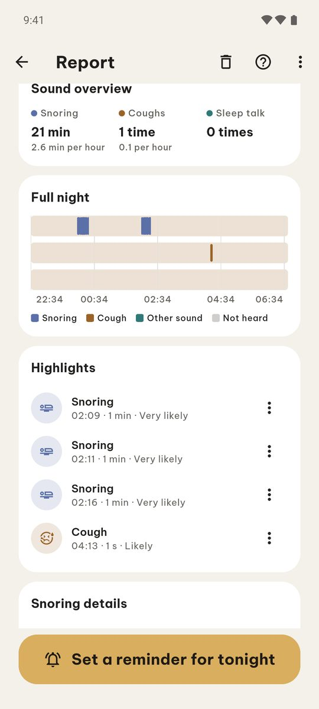
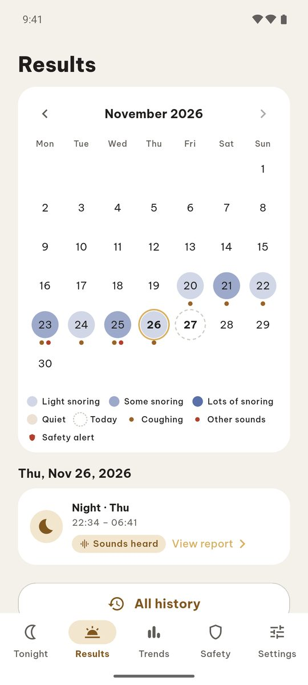

Nghe xem đêm qua của bạn ra sao
Đặt điện thoại cạnh giường, bấm Bắt đầu và đi ngủ. Sáng ra bạn biết mình có ngáy, ho hay nói mơ không — tất cả được phân tích ngay trên máy.


Biết rõ lúc nào và bao lâu
Mỗi sáng có một bản tóm tắt dễ hiểu: ngáy bao nhiêu phút, ho mấy lần, nói mơ mấy lần, kèm dòng thời gian cả đêm và các khoảnh khắc nổi bật.
Thấy ngay tiếng ngáy, tiếng ho rơi vào giờ nào.
Đêm nay so với tuần trước: tăng hay giảm.
Gắn thẻ rượu bia, cà phê muộn, nghẹt mũi… để so sánh các đêm của chính bạn.
Thông báo ngay trên máy, kèm nút gọi nhanh khi bạn cần.


Bé khóc, nhạc ru tự bật
Đặt máy trong phòng bé và bật Chế độ cho bé. Khi bé bắt đầu khóc, ứng dụng có thể tự phát nhạc ru, nhịp tim hoặc tiếng mưa trong 10–20 phút.
Lúc nào, khóc bao lâu, có ngủ lại sau khi dỗ không.
Máy trong phòng bé không kêu, không gửi âm thanh đi đâu.

Mưa, suối, sóng biển và piano
Mười bản thu thật — mưa, suối, sóng biển, dế đêm, rừng đêm, lửa trại, quạt, nhịp tim, hộp nhạc ru, piano — cùng ồn trắng, hồng, nâu. Đặt hẹn giờ; trong lúc phát, ứng dụng tạm dừng nghe và tự tiếp tục khi âm tắt.


Âm thanh không rời khỏi máy
- Âm thanh được phân tích ngay trên điện thoại, không tải lên đâu cả
- Không cần tài khoản, không quảng cáo, không theo dõi
- Đoạn âm thanh ngắn chỉ được lưu khi bạn cho phép, xóa được bất cứ lúc nào
- Bản Android không xin quyền truy cập Internet

Miễn phí để ngủ ngon, Plus khi cần thêm
Theo dõi giấc ngủ, báo cáo buổi sáng, Safety Shield và Chế độ cho bé luôn miễn phí. Plus mở toàn bộ lịch sử, xu hướng 30 ngày đến cả năm, mọi so sánh trong "Yếu tố của bạn", thêm âm ru ngủ và xuất báo cáo.
- Giá tại Việt Nam; nơi khác hiển thị theo tiền tệ địa phương
- Hủy gói bất cứ lúc nào trong App Store hoặc Google Play
Ứng dụng không phải thiết bị y tế và không chẩn đoán bệnh. Nhãn âm thanh do AI trên máy ước đoán và có thể sai. Nếu lo lắng về giấc ngủ hay sức khỏe, hãy hỏi ý kiến bác sĩ. Safety Shield không thay thế dịch vụ khẩn cấp. Chế độ cho bé không thay thế việc trông trẻ hay thiết bị y tế.